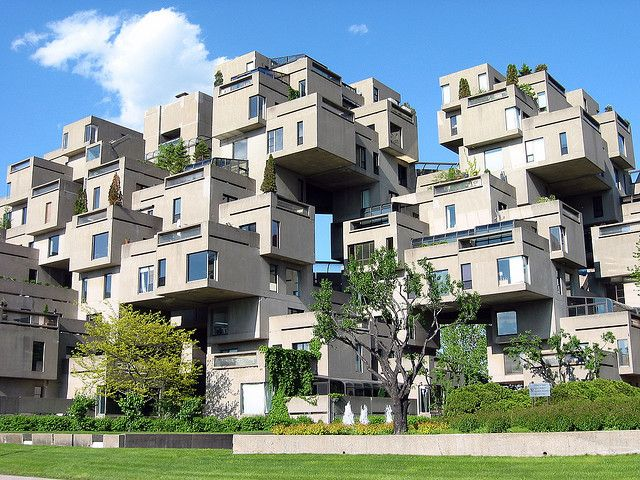

Architecture page

This is Habitat 67 in Montreal according to wikipedia.com it was designed by Israeli-Canadian architect Moshe Safdie.
It was then built "as a pavillion for Expo 67" back in April to October 1967, it is located close to the Saint-Laurent river.
It is quite a complex and unusual but very unique architecture.